정보처리기사 (2021-05-15 기출문제)
1과목: 소프트웨어 설계
1. 시스템의 구성요소로 볼 수 없는 것은?
- Process
- Feedback
- Maintenance
- Control
(정답률: 67%)

2. 유스케이스(Usecase)에 대한 설명 중 옳은 것은?
- 유스케이스 다이어그램은 개발자의 요구를 추출하고 분석하기 위해 주로 사용한다.
- 액터는 대상 시스템과 상호 작용하는 사람이나 다른 시스템에 의한 역할이다.
- 사용자 액터는 본 시스템과 데이터를 주고받는 연동 시스템을 의미한다.
- 연동의 개념은 일방적으로 데이터를 파일이나 정해진 형식으로 넘겨주는 것을 의미한다.
(정답률: 63%)
3. 요구사항 개발 프로세스의 순서로 옳은 것은?
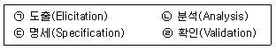
- ㉠ - ㉡ - ㉢ - ㉣
- ㉠ - ㉢ - ㉡ - ㉣
- ㉠ - ㉣ - ㉡ - ㉢
- ㉠ - ㉡ - ㉣ - ㉢
(정답률: 80%)
4. 객체지향 기법에서 같은 클래스에 속한 각각의 객체를 의미하는 것은?
- instance
- message
- method
- module
(정답률: 77%)
5. 객체지향 설계에서 객체가 가지고 있는 속성과 오퍼레이션의 일부를 감추어서 객체의 외부에서는 접근이 불가능하게 하는 개념은? (문제 오류로 가답안 발표시 3번으로 발표되었지만 확정 답안 발표시 2, 3번이 정답처리 되었습니다. 여기서는 가답안인 3번을 누르면 정답 처리 됩니다.)
- 조직화(Organizing)
- 캡슐화(Encapsulation)
- 정보은닉(Infomation Hiding)
- 구조화(Structuralization)
(정답률: 88%)
6. GoF (Gangs of Four) 디자인 패턴에 대한 설명으로 틀린 것은?
- factory method pattern은 상위클래스에서 객체를 생성하는 인터페이스를 정의하고, 하위클래스에서 인스턴스를 생성하도록 하는 방식이다.
- prototype pattern은 prototype을 먼저 생성하고 인스턴스를 복제하여 사용하는 구조이다.
- bridge pattern은 기존에 구현되어 있는 클래스에 기능 발생 시 기존 클래스를 재사용할 수 있도록 중간에서 맞춰주는 역할을 한다.
- mediator pattern은 객체간의 통제와 지시의 역할을 하는 중재자를 두어 객체지향의 목표를 달성하게 해준다.
(정답률: 59%)
7. 요구사항 분석이 어려운 이유가 아닌 것은?
- 개발자와 사용자 간의 지식이나 표현의 차이가 커서 상호 이해가 쉽지 않다.
- 사용자의 요구는 예외가 거의 없어 열거와 구조화가 어렵지 않다.
- 사용자의 요구사항이 모호하고 불명확하다.
- 소프트웨어 개발 과정 중에 요구사항이 계속 변할 수 있다.
(정답률: 89%)
8. 소프트웨어 아키텍처 설계에서 시스템 품질속성이 아닌 것은?
- 가용성 (Availability)
- 독립성 (Isolation)
- 변경 용이성 (Modifiability)
- 사용성(Usability)
(정답률: 60%)
9. 다음 설명에 해당하는 시스템으로 옳은 것은?
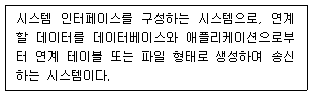
- 연계 서버
- 중계 서버
- 송신 시스템
- 수신 시스템
(정답률: 78%)
10. CASE(Computer-Aided Software Engineering)의 원천 기술이 아닌 것은?
- 구조적 기법
- 프로토타이핑 기술
- 정보 저장소 기술
- 일괄처리 기술
(정답률: 57%)
11. 객체에게 어떤 행위를 하도록 지시하는 명령은?
- Class
- Package
- Object
- Message
(정답률: 84%)
12. 서브시스템이 입력 데이터를 받아 처리하고 결과를 다른 시스템에 보내는 작업이 반복되는 아키텍처 스타일은?
- 클라이언트 서버 구조
- 계층 구조
- MVC 구조
- 파이프 필터 구조
(정답률: 75%)
13. 럼바우(Rumbaugh)의 객체지향 분석에서 사용하는 분석 활동으로 옳은 것은?
- 객체 모델링, 동적 모델링, 정적 모델링
- 객체 모델링, 동적 모델링, 기능 모델링
- 동적 모델링, 기능 모델링, 정적 모델링
- 정적 모델링, 객체 모델링, 기능 모델링
(정답률: 90%)
14. UML 다이어그램이 아닌 것은?
- 액티비티 다이어그램(Activity diagram)
- 절차 다이어그램(Procedural diagram)
- 클래스 다이어그램(Class diagram)
- 시퀀스 다이어그램(Sequence diagram)
(정답률: 63%)
15. UML 모델에서 한 객체가 다른 객체에게 오퍼레이션을 수행하도록 지정하는 의미적 관계로 옳은 것은?
- Dependency
- Realization
- Generalization
- Association
(정답률: 47%)
16. 다음 중 상위 CASE 도구가 지원하는 주요기능으로 볼 수 없는 것은?
- 모델들 사이의 모순검사 기능
- 전체 소스코드 생성 기능
- 모델의 오류검증 기능
- 자료흐름도 작성 기능
(정답률: 72%)
17. 요구사항 관리 도구의 필요성으로 틀린 것은?
- 요구사항 변경으로 인한 비용 편익 분석
- 기존 시스템과 신규 시스템의 성능 비교
- 요구사항 변경의 추적
- 요구사항 변경에 따른 영향 평가
(정답률: 62%)
18. 애자일 개발 방법론이 아닌 것은?
- 스크럼(Scrum)
- 익스트림 프로그래밍(XP, eXtreme Programming)
- 기능 주도 개발(FDD, Feature Driven Development)
- 하둡(Hadoop)
(정답률: 84%)
19. GoF(Gangs of Four) 디자인 패턴 중 생성패턴으로 옳은 것은?
- singleton pattern
- adapter pattern
- decorator pattern
- state pattern
(정답률: 76%)
20. 사용자 인터페이스(UI)의 특징으로 틀린 것은?
- 구현하고자 하는 결과의 오류를 최소화한다.
- 사용자의 편의성을 높임으로써 작업시간을 증가시킨다.
- 막연한 작업 기능에 대해 구체적인 방법을 제시하여 준다.
- 사용자 중심의 상호 작용이 되도록 한다.
(정답률: 90%)
2과목: 소프트웨어 개발
21. 힙 정렬(Heap Sort)에 대한 설명으로 틀린것은?
- 정렬할 입력 레코드들로 힙을 구성하고 가장 큰 키 값을 갖는 루트 노드를 제거하는 과정을 반복하여 정렬하는 기법이다.
- 평균 수행 시간은 O(nlog2n)이다.
- 완전 이진트리(complete binary tree)로 입력자료의 레코드를 구성한다.
- 최악의 수행 시간은 O(2n4)이다.
(정답률: 72%)
22. 다음 중 단위 테스트를 통해 발견할 수 있는 오류가 아닌 것은?
- 알고리즘 오류에 따른 원치 않는 결과
- 탈출구가 없는 반복문의 사용
- 모듈 간의 비정상적 상호작용으로 인한 원치 않는 결과
- 틀린 계산 수식에 의한 잘못된 결과
(정답률: 65%)
23. 다음 설명의 소프트웨어 테스트의 기본원칙은?
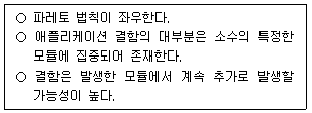
- 살충제 패러독스
- 결함 집중
- 오류 부재의 궤변
- 완벽한 테스팅은 불가능
(정답률: 82%)
24. 버전 관리 항목 중 저장소에 새로운 버전의 파일로 갱신하는 것을 의미하는 용어는?
- 형상 감사(Configuration Audit)
- 롤백 (Rollback)
- 단위 테스트(Unit Test)
- 체크인(Check-In)
(정답률: 77%)
25. 소프트웨어 테스트와 관련한 설명으로 틀린것은?
- 화이트 박스 테스트는 모듈의 논리적인 구조를 체계적으로 점검할 수 있다.
- 블랙박스 테스트는 프로그램의 구조를 고려하지 않는다.
- 테스트 케이스에는 일반적으로 시험 조건,테스트 데이터, 예상 결과가 포함되어야한다.
- 화이트박스 테스트에서 기본 경로(BasisPath)란 흐름 그래프의 시작 노드에서 종료노드까지의 서로 독립된 경로로 싸이클을 허용하지 않는 경로를 말한다.
(정답률: 63%)
26. 애플리케이션의 처리량, 응답시간, 경과시간, 자원사용률에 대해 가상의 사용자를 생성하고 테스트를 수행함으로써 성능 목표를 달성하였는지를 확인하는 테스트 자동화 도구는?
- 명세 기반 테스트 설계 도구
- 코드 기반 테스트 설계 도구
- 기능 테스트 수행 도구
- 성능 테스트 도구
(정답률: 82%)
27. 소프트웨어 형상 관리에 대한 설명으로 거리가 먼 것은?
- 소프트웨어에 가해지는 변경을 제어하고 관리한다.
- 프로젝트 계획, 분석서, 설계서, 프로그램, 테스트 케이스 모두 관리 대상이다.
- 대표적인 형상관리 도구로 Ant, Maven, Gradle 등이 있다.
- 유지 보수 단계뿐만 아니라 개발 단계에도 적용할 수 있다.
(정답률: 67%)
28. 디지털 저작권 관리(DRM) 구성 요소가 아닌 것은?
- Dataware house
- DRM Controller
- Packager
- Contents Distributor
(정답률: 62%)
29. 다음 설명의 소프트웨어 버전 관리도구 방식은?
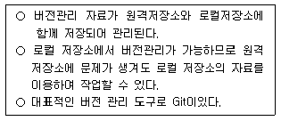
- 단일 저장소 방식
- 분산 저장소 방식
- 공유폴더 방식
- 클라이언트·서버 방식
(정답률: 78%)
30. 블랙박스 테스트를 이용하여 발견할 수 있는 오류가 아닌 것은?
- 비정상적인 자료를 입력해도 오류 처리를 수행하지 않는 경우
- 정상적인 자료를 입력해도 요구된 기능이 제대로 수행되지 않는 경우
- 반복 조건을 만족하는데도 루프 내의 문장이 수행되지 않는 경우
- 경계값을 입력할 경우 요구된 출력 결과가 나오지 않는 경우
(정답률: 72%)
31. 다음 자료를 버블 정렬을 이용하여 오름차순으로 정렬할 경우 Pass 2의 결과는?
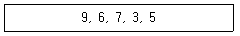
- 3, 5, 6, 7, 9
- 6, 7, 3, 5, 9
- 3, 5, 9, 6, 7
- 6, 3, 5, 7, 9
(정답률: 66%)
32. 정렬된 N개의 데이터를 처리하는 데 O(Nlog2N)의 시간이 소요되는 정렬 알고리즘은?
- 합병정렬
- 버블정렬
- 선택정렬
- 삽입정렬
(정답률: 72%)
33. 다음 postfix로 표현된 연산식의 연산 결과로 옳은 것은?
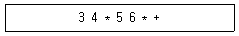
- 35
- 42
- 81
- 360
(정답률: 85%)
34. EAI(Enterprise Application Integration) 구축 유형에서 애플리케이션 사이에 미들웨어를 두어 처리하는 것은? (문제 오류로 가답안 발표시 1번으로 발표되었지만 확정 답안 발표시 1, 3, 4번이 정답처리 되었습니다. 여기서는 가답안인 1번을 누르면 정답 처리 됩니다.)
- Message Bus
- Point-to-point
- Hub & Spoke
- Hybrid
(정답률: 83%)
35. 인터페이스 구현 검증 도구가 아닌 것은?
- Foxbase
- STAF
- watir
- xUnit
(정답률: 61%)
36. 클린코드 작성원칙에 대한 설명으로 틀린 것은?
- 코드의 중복을 최소화 한다.
- 코드가 다른 모듈에 미치는 영향을 최대화하도록 작성한다.
- 누구든지 코드를 쉽게 읽을 수 있도록 작성한다.
- 간단하게 코드를 작성한다.
(정답률: 87%)
37. 소프트웨어 패키징에 대한 설명으로 틀린 것은?
- 패키징은 개발자 중심으로 진행한다.
- 신규 및 변경 개발소스를 식별하고, 이를 모듈화하여 상용제품으로 패키징 한다.
- 고객의 편의성을 위해 매뉴얼 및 버전관리를 지속적으로 한다.
- 범용 환경에서 사용이 가능하도록 일반적인 배포 형태로 패키징이 진행된다.
(정답률: 87%)
38. 공학적으로 잘된 소프트웨어(Well Engineered Software)의 설명 중 틀린 것은?
- 소프트웨어는 유지보수가 용이해야 한다.
- 소프트웨어는 신뢰성이 높아야 한다.
- 소프트웨어는 사용자 수준에 무관하게 일관된 인터페이스를 제공해야 한다.
- 소프트웨어는 충분한 테스팅을 거쳐야 한다.
(정답률: 90%)
39. 테스트와 디버그의 목적으로 옳은 것은?
- 테스트는 오류를 찾는 작업이고 디버깅은 오류를 수정하는 작업이다.
- 테스트는 오류를 수정하는 작업이고 디버깅은 오류를 찾는 작업이다.
- 둘 다 소프트웨어의 오류를 찾는 작업으로 오류 수정은 하지 않는다.
- 둘 다 소프트웨어 오류의 발견, 수정과 무관하다.
(정답률: 78%)
40. 다음 중 스택을 이용한 연산과 거리가 먼 것은?
- 선택정렬
- 재귀호출
- 후위표현(Post-fix expression)의 연산
- 깊이우선탐색
(정답률: 54%)
3과목: 데이터베이스 구축
41. 병렬 데이터베이스 환경 중 수평 분할에서 활용되는 분할 기법이 아닌 것은?
- 라운드-로빈
- 범위 분할
- 예측 분할
- 해시 분할
(정답률: 44%)
42. 시스템 카탈로그에 대한 설명으로 옳지 않은 것은?
- 사용자가 직접 시스템 카탈로그의 내용을 갱신하여 데이터베이스 무결성을 유지한다.
- 시스템 자신이 필요로 하는 스키마 및 여러가지 객체에 관한 정보를 포함하고 있는 시스템 데이터베이스이다.
- 시스템 카탈로그에 저장되는 내용을 메타데이터라고도 한다.
- 시스템 카탈로그는 DBMS가 스스로 생성하고 유지한다.
(정답률: 73%)
43. SQL 문에서 SELECT에 대한 설명으로 옳지않은 것은?
- FROM 절에는 질의에 의해 검색될 데이터들을 포함하는 테이블명을 기술한다.
- 검색결과에 중복되는 레코드를 없애기위해서는 WHERE 절에 'DISTINCT'키워드를 사용한다.
- HAVING 절은 GROUP BY 절과 함께 사용되며, 그룹에 대한 조건을 지정한다.
- ORDER BY 절은 특정 속성을 기준으로 정렬하여 검색할 때 사용한다.
(정답률: 70%)
44. SQL에서 VIEW를 삭제할 때 사용하는 명령은?
- ERASE
- KILL
- DROP
- DELETE
(정답률: 80%)
45. DDL(Data Define Language)의 명령어 중 스키마, 도메인, 인덱스 등을 정의할 때 사용하는 SQL문은?
- ALTER
- SELECT
- CREATE
- INSERT
(정답률: 74%)
46. 테이블 R1, R2에 대하여 다음 SQL문의결과는?
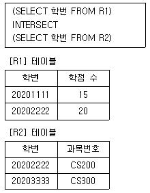
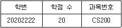
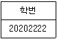
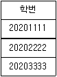
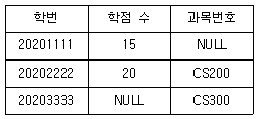
(정답률: 62%)
47. 데이터베이스 설계 시 물리적 설계 단계에서 수행하는 사항이 아닌 것은?
- 레코드 집중의 분석 및 설계
- 접근 경로 설계
- 저장 레코드의 양식 설계
- 목표 DBMS에 맞는 스키마 설계
(정답률: 72%)
48. 릴레이션에서 기본 키를 구성하는 속성은 널(Null)값이나 중복 값을 가질 수 없다는 것을 의미하는 제약조건은?
- 참조 무결성
- 보안 무결성
- 개체 무결성
- 정보 무결성
(정답률: 81%)
49. 병행제어 기법의 종류가 아닌 것은?
- 로킹 기법
- 시분할 기법
- 타임 스탬프 기법
- 다중 버전 기법
(정답률: 47%)
50. 다음 R1과 R2의 테이블에서 아래의 실행 결과를 얻기 위한 SQL문은?
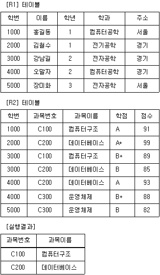
- SELECT 과목번호, 과목이름 FROM RI, R2 WHERE R1.학번 = R2. 학번 AND R1.학과='전자공학' AND R1.이름 = '강남길’;
- SELECT 과목번호, 과목이름 FROM RI, R2 WHERE R1.학번 = R2.학번 OR R1.학과='전자공학' OR R1.이름 = '홍길동';
- SELECT 과목번호, 과목이름 FROM R1, R2 WHERE R1.학번 = R2.학번 AND R1.학과=‘컴퓨터공학' AND R1.이름 '강남길’;
- SELECT 과목번호, 과목이름 FROM R1, R2 WHERE R1.학번 = R2.학번 OR R1.학과='컴퓨터공학' OR R1.이름 = '홍길동';
(정답률: 72%)
51. 다음 관계 대수 중 순수 관계 연산자가 아닌 것은?
- 차집합(difference)
- 프로젝트(project)
- 조인(join)
- 디비전 (division)
(정답률: 71%)
52. 관계형 데이터 모델의 릴레이션에 대한 설명으로 틀린 것은?
- 모든 속성 값은 원자 값을 갖는다.
- 한 릴레이션에 포함된 튜플은 모두 상이하다.
- 한 릴레이 션에 포함된 튜플 사이에는 순서가 없다.
- 한 릴레이션을 구성하는 속성 사이에는 순서가 존재한다.
(정답률: 73%)
53. 릴레이션 R의 차수가 4이고 카디널리티가 5이며, 릴레이션 S의 차수가 6이고 카디널리티가 7일 때, 두 개의 릴레이션을 카티션 프로덕트한 결과의 새로운 릴레이 션의 차수와 카디널리티는 얼마인가?
- 24, 35
- 24, 12
- 10, 35
- 10, 12
(정답률: 66%)
54. 속성(attribute)에 대한 설명으로 틀린 것은?
- 속성은 개체의 특성을 기술한다.
- 속성은 데이터베이스를 구성하는 가장 작은 논리적 단위이다.
- 속성은 파일 구조상 데이터 항목 또는 데이터 필드에 해당된다.
- 속성의 수를 "cardinality" 라고 한다.
(정답률: 75%)
55. 다음 SQL 문에서 ( ) 안에 들어갈 내용으로 옳은 것은?
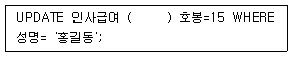
- SET
- FROM
- INTO
- IN
(정답률: 81%)
56. 관계 데이터베이스 모델에서 차수(Degree)의 의미는?
- 튜플의 수
- 테이블의 수
- 데이터베이스의 수
- 애트리뷰트의 수
(정답률: 70%)
57. 개체-관계 모델(E-R)의 그래픽 표현으로 옳지 않은 것은?
- 개체타입 – 사각형
- 속성 - 원형
- 관계타입 - 마름모
- 연결 - 삼각형
(정답률: 86%)
58. 트랜잭션의 실행이 실패하였음을 알리는 연산자로 트랜잭션이 수행한 결과를 원래의 상태로 원상 복귀 시키는 연산은?
- COMMIT 연산
- BACKUP 연산
- LOG 연산
- ROLLBACK 연산
(정답률: 88%)
59. 데이터 속성 간의 종속성에 대한 엄밀한 고려없이 잘못 설계된 데이터베이스에서는 데이터 처리 연산 수행 시 각종 이상 현상이 발생할 수 있는데, 이러한 이상 현상이 아닌 것은?
- 검색 이상
- 삽입 이상
- 삭제 이상
- 갱신 이상
(정답률: 73%)
60. 제3정규형 (3NF)에서 BCNF(Boyce-Codd Normal Form)가 되기 위한 조건은?
- 결정자가 후보키가 아닌 함수 종속 제거
- 이행적 함수 종속 제거
- 부분적 함수 종속 제거
- 원자값이 아닌 도메인 분해
(정답률: 76%)
4과목: 프로그래밍 언어 활용
61. 다음 설명에 해당하는 방식은?
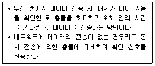
- STA
- Collision Domain
- CSMA/CA
- CSMA/CD
(정답률: 62%)
62. 다음 중 가장 약한 결합도(Coupling)는?
- Common Coupling
- Content Coupling
- External Coupling
- Stamp Coupling
(정답률: 64%)
63. 다음 C언어 프로그램이 실행되었을 때의 결과는?
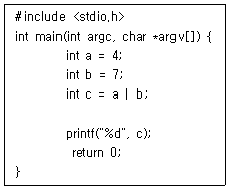
- 3
- 4
- 7
- 10
(정답률: 62%)
64. 다음 파이썬(Python) 프로그램이 실행되었을 때의 결과는?
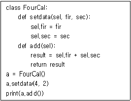
- 0
- 2
- 4
- 6
(정답률: 76%)
65. 교착상태의 해결 방법 중 은행원 알고리즘(Banker's Algorithm)이 해당되는 기법은?
- Detection
- Avoidance
- Recovery
- Prevention
(정답률: 75%)
66. CIDR(Classless Inter-Domain Routing) 표기로 203.241.132.82/27과 같이 사용되었다면, 해당 주소의 서브넷 마스크(subnet mask)는?
- 255.255.255.0
- 255.255.255.224
- 255.255.255.240
- 255.255.255.248
(정답률: 61%)
67. 다음 JAVA 프로그램이 실행되었을 때의 결과는?
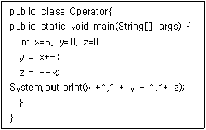
- 5, 5, 5
- 5, 6, 5
- 6, 5, 5
- 5, 6, 4
(정답률: 64%)
68. 프로세스 적재 정책과 관련한 설명으로 틀린 것은?
- 반복, 스택, 부프로그램은 시간 지역성(Temporal Locality)과 관련이 있다.
- 공간 지역성(Spatial Locality)은 프로세스가 어떤 페이지를 참조했다면 이후 가상주소공간상 그 페이지와 인접한 페이지들을 참조할 가능성이 높음을 의미한다.
- 일반적으로 페이지 교환에 보내는 시간보다 프로세스 수행에 보내는 시간이 더 크면 스레싱(Thrashing)이 발생한다.
- 스레싱(Thrashing) 현상을 방지하기 위해서는 각 프로세스가 필요로 하는 프레임을 제공할 수 있어야 한다.
(정답률: 61%)
69. 프레임워크(Framework)에 대한 설명으로 옳은 것은?
- 소프트웨어 구성에 필요한 기본 구조를 제공함으로써 재사용이 가능하게 해준다
- 소프트웨어 개발 시 구조가 잡혀 있기 때문에 확장이 불가능하다.
- 소프트웨어 아키텍처(Architecture)와 동일한 개념이다.
- 모듈화(Modularity)가 불가능하다.
(정답률: 67%)
70. 다음 JAVA 프로그램이 실행되었을 때의 결과는?
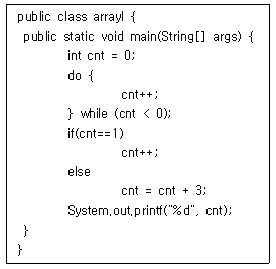
- 2
- 3
- 4
- 5
(정답률: 55%)
71. 리눅스 Bash 쉘(Shell)에서 export와 관련한 설명으로 틀린 것은?
- 변수를 출력하고자 할 때는 export를 사용해야 한다.
- export가 매개변수 없이 쓰일 경우 현재 설정된 환경변수들이 출력된다.
- 사용자가 생성하는 변수는 export 명령어 표시하지 않는 한 현재 쉘에 국한된다.
- 변수를 export 시키면 전역(Global)변수처럼 되어 끝까지 기억된다.
(정답률: 49%)
72. 다음 C언어 프로그램이 실행되었을 때의 결과는?
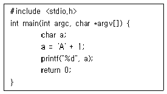
- 1
- 11
- 66
- 98
(정답률: 70%)
73. 다음 C언어 프로그램이 실행되었을 때의 결과는?
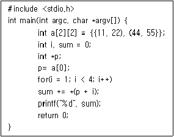
- 55
- 77
- 121
- 132
(정답률: 57%)
74. 페이징 기법에서 페이지 크기가 작아질수록 발생하는 현상이 아닌 것은?
- 기억장소 이용 효율이 증가한다.
- 입·출력 시간이 늘어난다.
- 내부 단편화가 감소한다.
- 페이지 맵 테이블의 크기가 감소한다.
(정답률: 54%)
75. 다음 중 가장 강한 응집도(Cohesion)는?
- Sequential Cohesion
- Procedural Cohesion
- Logical Cohesion
- Coincidental Cohesion
(정답률: 56%)
76. TCP 프로토콜과 관련한 설명으로 틀린 것은?
- 인접한 노드 사이의 프레임 전송 및 오류를 제어한다.
- 흐름 제어(Flow Control)의 기능을 수행한다.
- 전이 중(Full Duplex) 방식의 양방향 가상회선을 제공한다.
- 전송 데이터와 응답 데이터를 함께 전송할 수 있다.
(정답률: 44%)
77. C언어에서 연산자 우선순위가 높은 것에서 낮은 것으로 바르게 나열된 것은?
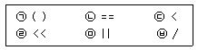
- ㉠, ㉥, ㉣, ㉢, ㉡, ㉤
- ㉠, ㉣, ㉥, ㉢, ㉡, ㉤
- ㉠, ㉣, ㉥, ㉢, ㉤, ㉡
- ㉠, ㉥, ㉣, ㉤, ㉡, ㉢
(정답률: 48%)
78. C언어 라이브러리 중 stdlib.h에 대한설명으로 옳은 것은?
- 문자열을 수치 데이터로 바꾸는 문자 변환함수와 수치를 문자열로 바꿔주는 변환함수 등이 있다.
- 문자열 처리 함수로 strlen()이 포함되어 있다.
- 표준 입출력 라이브러리이다.
- 삼각 함수, 제곱근, 지수 등 수학적인 함수를 내장하고 있다.
(정답률: 55%)
79. 자바스크립트(JavaScript)와 관련한 설명으로 틀린 것은? (문제 오류로 가답안 발표시 2번으로 발표되었지만 확정 답안 발표시 모두 정답처리 되었습니다. 여기서는 가답안인 2번을 누르면 정답 처리 됩니다.)
- 프로토타입(Prototype)의 개념이 존재한다.
- 클래스 기반으로 객체 상속을 지원한다.
- Prototype Link와 Prototype Object를 활용할 수 있다.
- 객체지향 언어이다.
(정답률: 83%)
80. OSI 7계층 중 네트워크 계층에 대한 설명으로 틀린 것은?
- 패킷을 발신지로부터 최종 목적지까지 전달하는 책임을 진다.
- 한 노드로부터 다른 노드로 프레임을 전송하는 책임을 진다.
- 패킷에 발신지와 목적지의 논리 주소를 추가한다.
- 라우터 또는 교환기는 패킷 전달을 위해 경로를 지정하거나 교환 기능을 제공한다.
(정답률: 53%)
5과목: 정보시스템 구축관리
81. 다음 내용이 설명하는 것은?
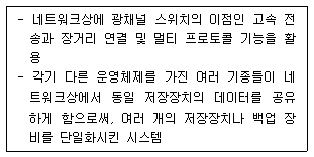
- SAN
- MBR
- NAC
- NIC
(정답률: 57%)
82. SSH(Secure Shell)에 대한 설명으로 틀린 것은?
- SSH의 기본 네트워크 포트는 220번을 사용한다
- 전송되는 데이터는 암호화 된다.
- 키를 통한 인증은 클라이언트의 공개키를 서버에 등록해야 한다.
- 서로 연결되어 있는 컴퓨터 간 원격 명령실행이나 셀 서비스 등을 수행한다.
(정답률: 68%)
83. CBD(Component Based Development) SW개발 표준 산출물 중 분석 단계에 해당하는 것은?
- 클래스 설계서
- 통합시험 결과서
- 프로그램 코드
- 사용자 요구사항 정의서
(정답률: 61%)
84. 다음 내용이 설명하는 접근 제어 모델은?
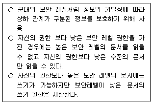
- Clark-Wilson Integrity Model
- PDCA Model
- Bell-Lapadula Model
- Chinese Wall Model
(정답률: 58%)
85. 하둡(Hadoop)과 관계형 데이터베이스간에 데이터를 전송할 수 있도록 설계된 도구는?
- Apnic
- Topology
- Sqoop
- SDB.
(정답률: 73%)
86. 라우팅 프로토콜인 OSPF(Open Shortest Path First)에 대한 설명으로 옳지 않은 것은?
- 네트워크 변화에 신속하게 대처할 수 있다.
- 거리 벡터 라우팅 프로토콜이라고 한다.
- 멀티캐스팅을 지원한다.
- 최단 경로 탐색에 Dijkstra 알고리즘을 사용한다.
(정답률: 49%)
87. 소프트웨어 비용 추정 모형(estimation models)이 아닌 것은?
- COCOMO
- Putnam
- Function-Point
- PERT
(정답률: 67%)
88. 코드의 기입 과정에서 원래 '12536‘으로 기입되어야 하는데 ’12936‘으로 표기되었을 경우, 어떤 코드 오류에 해당하는가?
- Addition Error
- Omission Error
- Sequence Error
- Transcription Error
(정답률: 57%)
89. ISO 12207 표준의 기본 생명주기의 주요 프로세스에 해당하지 않는 것은?
- 획득 프로세스
- 개발 프로세스
- 성능평가 프로세스
- 유지보수 프로세스
(정답률: 34%)
90. 소프트웨어 비용 산정 기법 중 개발 유형으로 organic, semi-detached, embedded로 구분되는 것은?
- PUTNAM
- COCOMO
- FP
- SLIM
(정답률: 83%)
91. SPICE 모델의 프로세스 수행능력 수준의 단계별 설명이 틀린 것은?
- 수준 7 - 미완성 단계
- 수준 5 - 최적화 단계
- 수준 4 - 예측 단계
- 수준 3 - 확립 단계
(정답률: 71%)
92. PC, TV, 휴대폰에서 원하는 콘텐츠를 끊김없이 자유롭게 이용할 수 있는 서비스는?
- Memristor
- MEMS
- SNMP
- N-Screen
(정답률: 71%)
93. 해쉬(Hash) 기법에 대한 설명으로 틀린 것은?
- 임의의 길이의 입력 데이터를 받아 고정된 길이의 해쉬 값으로 변환한다.
- 주로 공개키 암호화 방식에서 키 생성을 위해 사용한다.
- 대표적인 해쉬 알고리즘으로 HAVAL, SHA-1 등이 있다.
- 해쉬 함수는 일방향 함수(One-way function)이다.
(정답률: 50%)
94. IPSec(IP Security)에 대한 설명으로 틀린 것은?
- 암호화 수행시 일방향 암호화만 지원한다.
- ESP는 발신지 인증, 데이터 무결성, 기밀성 모두를 보장한다.
- 운영 모드는 Tunnel 모드와 Transport 모드로 분류된다.
- AH는 발신지 호스트를 인증하고, IP 패킷의 무결성을 보장한다.
(정답률: 68%)
95. 메모리상에서 프로그램의 복귀 주소와 변수 사이에 특정 값을 저장해 두었다가 그 값이 변경되었을 경우 오버플로우 상태로 가정하여 프로그램 실행을 중단하는 기술은?
- Stack Guard
- Bridge
- ASLR
- FIN
(정답률: 79%)
96. 침입차단 시스템(방화벽) 중 다음과 같은 형태의 구축 유형은?
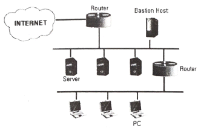
- Block Host
- Tree Host
- Screened Subnet
- Ring Homed
(정답률: 50%)
97. Secure OS의 보안 기능으로 거리가 먼 것은?
- 식별 및 인증
- 임의적 접근 통제
- 고가용성 지원
- 강제적 접근 통제
(정답률: 75%)
98. 서버에 열린 포트 정보를 스캐닝해서 보안취약점을 찾는데 사용하는 도구는?
- type
- mkdir
- ftp
- nmap
(정답률: 68%)
99. 서로 다른 네트워크 대역에 있는 호스트들 상호간에 통신할 수 있도록 해주는 네트워크 장비는?
- L2 스위치
- HIPO
- 라우터
- RAD.
(정답률: 79%)
100. 암호화 키와 복호화 키가 동일한 암호화 알고리즘은?
- RSA
- AES
- DSA
- ECC
(정답률: 57%)